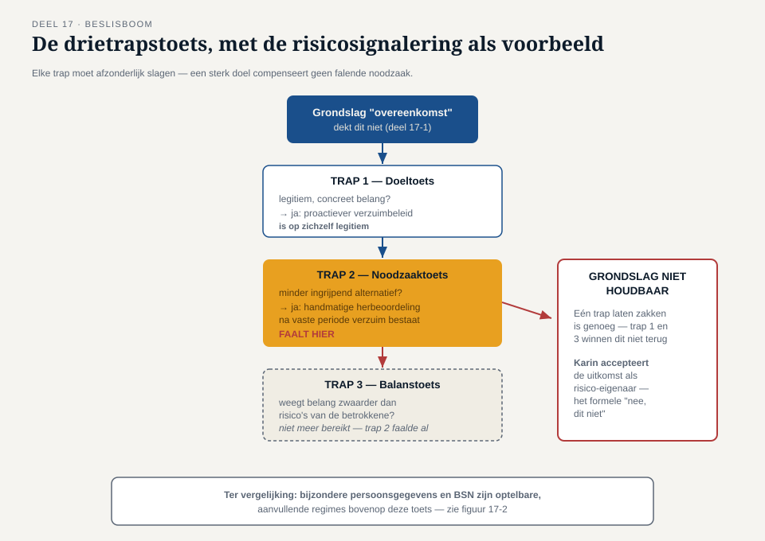
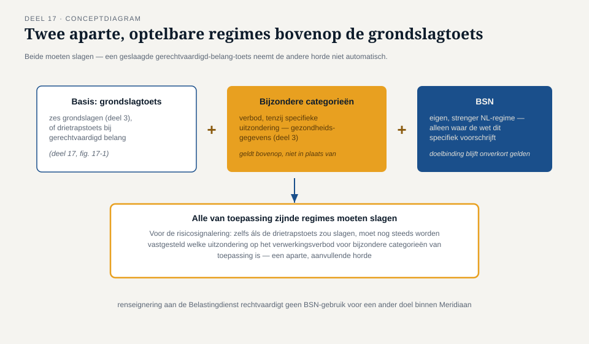
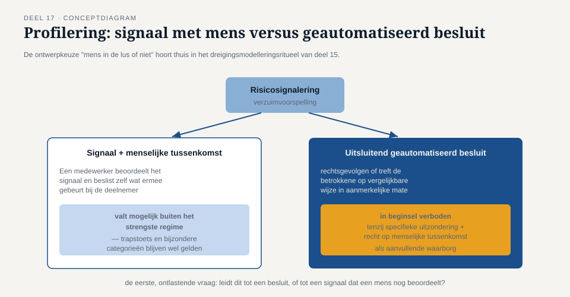

Deel 17 — DPIA II en grondslagen gevorderd
Slidedeck · Ductus-cursus Informatiebeveiliging en privacy · niveau 2 · deel 17 van 22 · 22 slides
Slide 1 — Titel
Informatiebeveiliging en Privacy
Deel 17 · Niveau 2 · Professional
DPIA II en grondslagen gevorderd
Slide 2 — De bevinding die niemand wilde
De DPIA legt iets bloot: de risicosignaleringsfunctionaliteit
heeft geen duidelijke grondslag.
Slide 3 — Sannes scherpe vraag
"Is dit noodzakelijk voor de overeenkomst,
of doen we dit omdat het nuttig zou kunnen zijn?"
Slide 4 — "Binnen hetzelfde systeem" is geen grondslag
Organisatorisch feit ≠ juridische toets.
Elke aanvullende verwerking: eigen, aparte onderbouwing nodig.
Slide 5 — Opdracht 17.1
Weerleg: "dit gebeurt binnen dezelfde overeenkomst, dus gedekt."
Slide 6 — De drietrapstoets

Trap 1 Doel — legitiem?
Trap 2 Noodzaak — geen minder ingrijpend alternatief?
Trap 3 Balans — weegt het belang nog steeds zwaarder?
Slide 7 — Elke trap moet apart slagen
Een sterk "ja" op trap 1
compenseert geen "nee" op trap 2 of 3.
Geen optelsom. Een reeks hordes.
Slide 8 — Waar de risicosignalering faalt
Trap 2: een minder ingrijpend alternatief bestaat
(handmatige herbeoordeling).
Slide 9 — Opdracht 17.2
Doorloop de drietrapstoets voor fraudedetectie op inlogpatronen.
PAUZE
Slide 10 — Twee aparte, optelbare regimes

Gerechtvaardigd belang: geslaagd ≠ klaar.
Bijzondere persoonsgegevens: eigen verwerkingsverbod, eigen uitzondering nodig.
Slide 11 — Het BSN
Geen bijzonder persoonsgegeven — wél een eigen, strenger regime.
Alleen waar een wet het specifiek voorschrijft.
Doelbinding geldt onverkort: doel A ≠ automatisch doel B.
Slide 12 — Opdracht 17.3
Waarom is een geslaagde drietrapstoets niet genoeg
bij bijzondere persoonsgegevens?
Slide 13 — Profilering
Persoonsgegevens gebruiken om aspecten te voorspellen —
gezondheid, gedrag, prestaties.
Slide 14 — Het strengste regime
Uitsluitend geautomatiseerd + rechtsgevolg of vergelijkbare impact
= in beginsel verboden.

Slide 15 — De ontlastende vraag
Signaal, beoordeeld door een mens?
Of rechtstreeks een besluit, zonder tussenkomst?
Slide 16 — Opdracht 17.4
Drie scenario's. Valt dit onder het strengste regime?
Slide 17 — De valkuil in vraag 3
Een mens "kijkt ernaar" — maar neemt het advies altijd over.
Op papier: tussenkomst. In de praktijk: schijn.
Slide 18 — Terug naar de rode draad
Aanwezig (een mens in de lus) ≠ werkend
(een mens die daadwerkelijk zelfstandig beoordeelt).
Slide 19 — De uitkomst voor het Mutatieplatform
De functionaliteit kan niet door in de voorgenomen vorm.
Karin accepteert — met tegenzin, maar ze accepteert.
Slide 20 — Waarom dit een compliment is
Een DPIA die nooit "nee" zegt,
heeft niet grondig genoeg getoetst.
Slide 21 — Opdracht 17.5
Waarom is dit onderbouwde "nee" een kwaliteitskenmerk?
Slide 22 — Vooruitblik
Deel 18: leveranciers en de keten